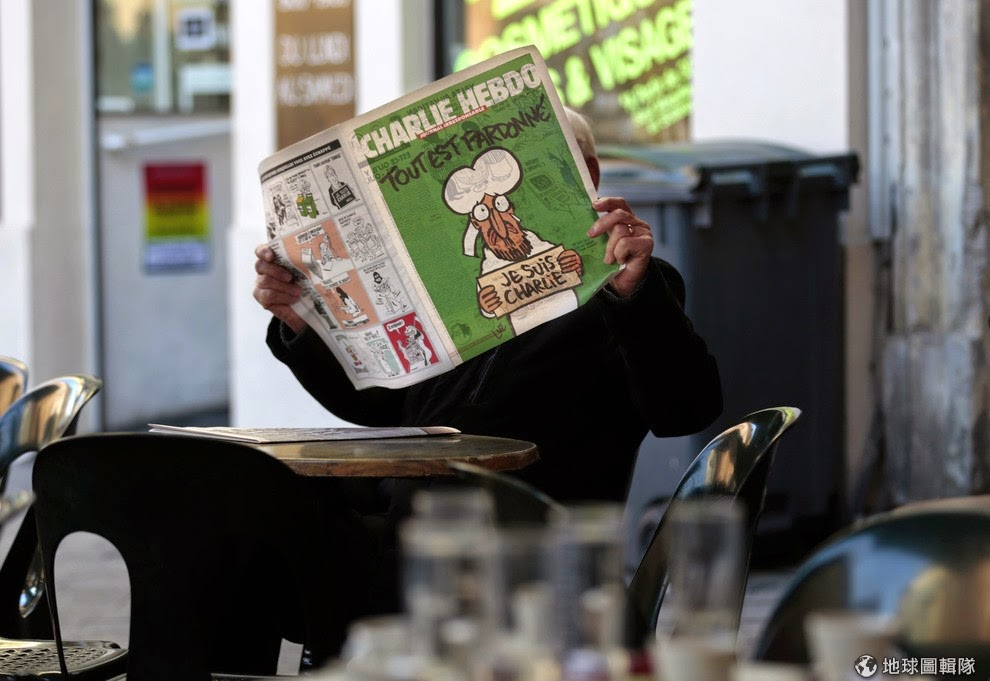

| 我相信你，你相信我嗎？請給我一個擁抱（圖片來源） |
{kind=link}
一個人在家時，或許是喜歡電視裡熱絡的氣氛，讓我跟世界又有了連結，莫名養成了電視新聞配午飯的習慣。今日一如往常，打開電視，先是總吵吵鬧鬧，靠評論政治人物維生的名嘴們，仍是喋喋不休，臆測和總統大選有緋聞的一干政治人物的真正居心。我對這種信口拈來毫無根據的說詞，不感興趣，便轉到新聞台，赫然發現伊斯蘭國又公佈最新一批斬首囚犯的錄影帶。
蒙面的領袖說著：
攜帶著十字架的教徒們，充滿敵意的埃及教堂的追隨者。基督教的朝聖者，你們的人身安全將會是你們唯一希望能擁有的。(The people of the cross, followers of the hostile Egyptian church. Safety for you crusaders is something you can only wish for.)
穿著橘色囚衣的 21 名埃及基督教徒，彷彿是伊斯蘭國對從前伊拉克戰爭，美軍爆發的虐囚醜聞，精心佈置的報復場景。然而，這樣以眼還眼，以牙還牙的冤冤相報，其實大多數的人都明白，這意味著更多無辜的老百姓，無論來自西方或東方，基督教或是伊斯蘭教，以及不問國際政治紛爭，只想助人的國際志工們受害。
我無法理解這樣的仇恨是由何而來。或者，更正確的說來，其實根本就沒有所謂的仇恨。而是純粹為了政治經濟利益，而將種族宗教仇恨過分渲染，好招募年輕徬徨的社會邊緣少年，來為這些搖晃著神聖宗教大旗的領袖賣命。就像前些日子沸沸揚揚的法國查理週刊事件，因為不智的言論而因此送命的法國人，和至死卻未能明瞭，自身所謂光榮犧牲的生命，只是那些滿口崇高理想的領袖們為了進入權利的殿堂而棄如敝屣的棋子。
整件事，聽起來宛如米蘭昆德拉筆下小說的世界，充滿了對現實的嘲諷和理想的虛妄。然而，有人無情地葬身槍口，有人因此而失去摯愛，這本染滿無辜者鮮血的諷刺小說頓時不再是那麼可笑。
紐約雜誌記者切特 (Jonanthan Chait) 在紐約雜誌中，抨擊歐巴馬最近關於言論自由中不該帶有對他人宗教的蔑視的評論。認為是藉由提供政府施加的道德規範來藉以約束自由的言論，達到政治正確的立場，進而讓人民忽視打壓言論自由的威脅性。切特更一步指出，政治正確的理論只是言論自由的絆腳石，是民主過程多元化的敵人。要能進一步達成政治多元化，應該要更不妥協的保障不當言論。 切特這番論述，讓我想到多年前希特勒對猶太人充滿恨意的言論在當時經濟蕭條的德國，激起了一陣反猶太社會風氣。
然而，我淺薄的學識和對中東政治的瞭解不如資深專業記者來的深切，所以反駁切特的話，和論述言論自由的界限，或許該由我追蹤的一位香港記者，陳婉容部落格中的一篇文章來回應更為恰當。
陳婉容引述 Nathan Lean 的小書 “The Islamophobia Industry: How the Right Manufactures Fears of Muslim.” 來論證目前歐洲充斥的反穆斯林論述完全是傾右翼政客刻意營造出來的政治氣氛。陳婉容說的很好，讓我直接引述她的心得：
“… 嘲諷宗教符號本來並非禁忌，事實上宗教本身不止可以批評，甚至應該批評。已故新無神論代表人物 Chris Hitchens 有句名言：「可以嘲諷宗教是很重要的……因為人類解放的其中一個開始就是嘲諷權威的能力。」Hitchens 說得沒錯，然而在法國本土，穆斯林已是被排拒的一群，是否真的是可以被任意嘲諷的「權威」，實在值得商椎…“
關於人類，我一直無法瞭解的是，對於同是人類卻不屬於同一種族的他人，我們往往缺乏同理心。這樣缺乏同理心的結果，就是歷史上一再重複有計畫式的大規模種族屠殺。在二戰期間，希特勒扭曲的言論主導下，德國狼犬的身分更勝於猶太人，這樣荒謬的事被當時的德國社會普遍容忍。而所有的人都知道的常理，不要侵入並激怒飢餓的老虎。然而，我們卻肆無忌憚激怒挑釁已經位在社會底層，一無所有，只能把宗教的慰藉當作一切的穆斯林青年，並且把這樣的言論當作是人身自由的一部份。
是的，於法，我們該保障言論自由。然而，那是在避免權威以不當的方式來篩檢過濾，並抑制不同聲音的前提下。對於一個人，若不能以同理心為前提，恣意地以言語當作利器，無法將心比心地考慮他人的感受，那是不是連成為一個人必須有的情感和對他人持有的尊重都喪失了呢？
關於法國人自身的內省，可以由法國導演盧貝松在查理週刊事件後，公開發表給穆斯林青少年的一封信來代表。其中一句話更是感人至深，他在信中說到：
“買一支 AK47 要 250 歐，但買一支筆只要 3 歐，而用筆的影響力要比槍還大 1000 倍，只要你懂得把握住這樣的力量，用民主的規則來玩遊戲。恐怖主義是不會贏的…”
同樣的話，我想也適合那些臺灣遭邊緣化而誤入歧途的孩子。是的，這個社會是不正義，不公平的。然而，我們能做的事情不是毀滅它，而是去改變它。而改變的力量，不是來自武力，更不是報復和仇殺。而是比那些一時激動澎湃，容易傳染的情緒更為堅定，更不易動搖的意志。那種如鋼鐵般，證明你們文化和宗教中的至善，容忍和包容的力量，這樣再多的嘲諷和誤解也只能困窘傷害將惡意言語輕易說出口的人，而不是你們。
為此，我向世界所有的宗教的神祉祈禱著。
|  |
| 圖片來源 |
{kind=link}
話又說回來，對於面對歧視的言論，沒有一個人比這個男人處理地更有智慧呀！
延伸閱讀：
- The Age of Exile: 誰才是可嘲諷的權威
- 天下人雜誌：真正的多元，是毫不妥協地保護不當言論
- 路透社新聞
- 查理週刊恐怖攻擊後，盧貝松寫了這封信給穆斯林的小伙子們